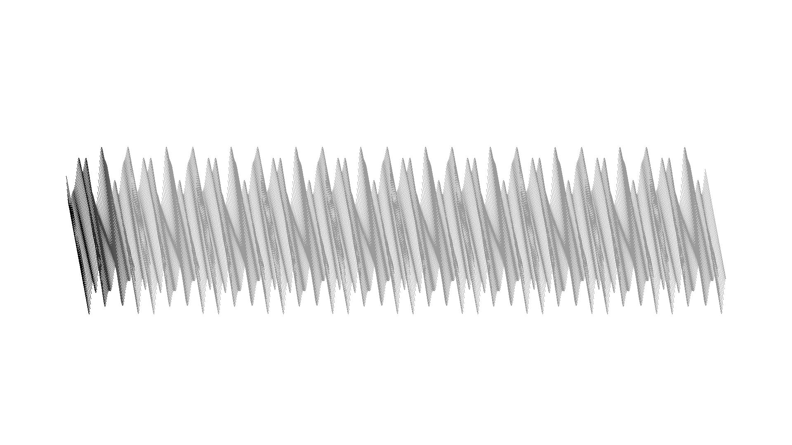
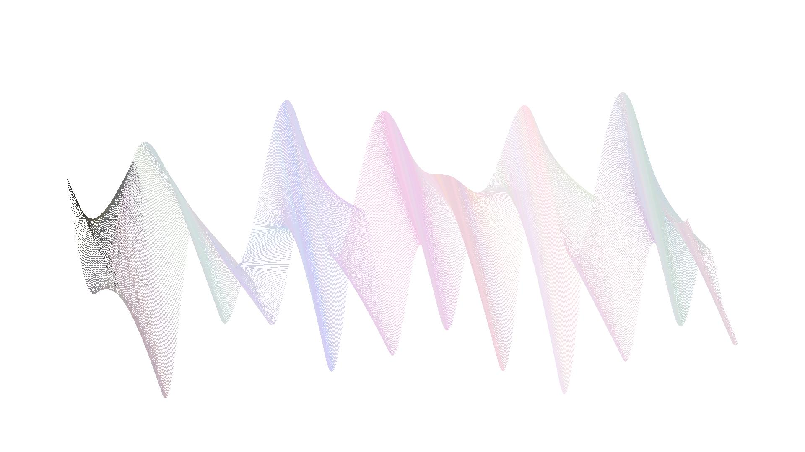

6/x/2022
Desde mis primeras participaciones en genuary quise probar dibujar usando únicamente líneas rectas como Antonio Sánchez Chinchón. Como músico siempre tengo presente las ondas de sonido. Por eso decidí usar dos señales para dibujar.

En blanco y negro
En sus fantásticas obras, Antonio dibuja montones de líneas usando distintos patrones. Siempre son negras. Acá hay algunas ondas en gris...


Paleta aleatoria
No me pude resistir. Apliqué la misma idea de siempre con un degradado. Y volví a moverme al azar en el espacio de color rgb.
